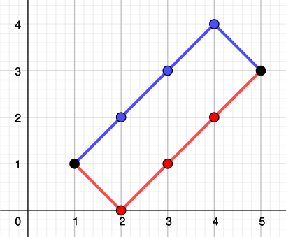
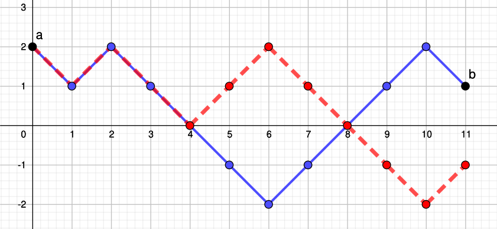

Marches aléatoires
}}
L’objet de ce chapitre est de faire une première introduction à un exemple intéressant de processus stochastique, soit la marche aléatoire simple symétrique, et ce avec un minimum de formalisme.
Dans la partie Section 1, on définit la marche aléatoire simple symétrique, et on étudie l’allure de ses trajectoires. La partie Section 2 est dédiée à son comportement en temps long. La partie Section 3 présente une première application vers les mathématiques financières avec l’étude d’un problème de ruine.
Trajectoires de la marche aléatoire
Un processus stochastique est une suite de variables aléatoires indexée par le temps. Il permet de modéliser l’évolution temporelle d’un phénomène comme la richesse d’une joueuse ou la valeur d’un portefeuille d’actions par exemple. La marche aléatoire simple symétrique est le modèle le plus simple de processus à temps discret.
Dans toute la suite, on se place sur un espace probabilisé (\Omega, \mathcal{F}, \mathbb{P}).
Définition
Commençons par définir la marche aléatoire simple symétrique.
Définition 1 Une marche aléatoire simple symétrique sur \mathbb{Z} est une suite (S_n)_{n\in\mathbb{N}} de variables aléatoires telles que
- S_0=x\in\mathbb{Z} est déterministe,
- S_{n+1}=S_n+X_{n+1} pour tout n\in\mathbb{N},
où (X_n)_{n\geq 1} est une suite de variables aléatoires indépendantes et de même loi de Rademacher de paramètre \frac 1 2 : \mathbb{P}(X_1=-1)=\mathbb{P}(X_1=1)=\frac{1}{2}.
On parle de marche car ce processus peut représenter la position d’une personne qui se déplace en ligne droite par pas d’une unité avec équiprobabilité d’aller vers l’avant (+1) ou vers l’arrière (-1). Cette marche est dite simple car on ne fait que des pas d’amplitude 1 et symétrique car il y a la même probabilité de tirer 1 et -1 pour chaque incrément.
Ce processus peut également servir à modéliser la richesse d’une joueuse qui joue à pile ou face avec une pièce équilibrée. Partant d’une richesse initiale S_0=x>0, à chaque pas de temps elle perd ou gagne 1 en fonction du tirage obtenu. Les variables X_n représentent alors le gain du n-ème jeu, et S_n la richesse totale de la joueuse après le n-ème tirage.
À partir de la définition, on obtient très facilement le comportement moyen de la marche.
Proposition 1 Pour tout n\in\mathbb{N}, on a \mathbb{E}[S_n]=S_0,\quad \mathop{\mathrm{Var}}(S_n)=n.
Preuve. Remarquons d’abord que \begin{align*} \mathbb{E}[X_1]&=(-1)\times \frac{1}{2}+1\times \frac{1}{2}=0,\\ \mathop{\mathrm{Var}}(X_1)&=\mathbb{E}[X_1^2]=(-1)^2\times \frac{1}{2}+1^2\times \frac{1}{2}=1, \end{align*} les incréments sont donc centrés et réduits. Par linéarité de l’espérance, on obtient \mathbb{E}[S_n]=\mathbb{E}[S_0+\sum_{k=1}^n X_k]=S_0+\sum_{k=1}^n \mathbb{E}[X_k]=S_0, puisque S_0 est déterministe. Enfin, en utilisant l’indépendance des X_k, on obtient \mathop{\mathrm{Var}}(S_n)=\mathop{\mathrm{Var}}(S_0+\sum_{k=1}^n X_k)=\sum_{k=1}^n \mathop{\mathrm{Var}}(X_k)=n, d’où le résultat.
Ainsi, en moyenne la marche reste constante, mais sa variance devient de plus en plus grande au cours du temps.
Représentation graphique
Les marches aléatoires, comme tous les processus à valeurs discrètes, ont une représentation graphique naturelle. On représente graphiquement un tirage de la marche (S_n)_{n\in\mathbb{N}} sur l’intervalle de temps \llbracket 0,N \rrbracket par une ligne brisée joignant les points (0,S_0), (1,S_1), ,(N,S_N). On a donc en abscisse le temps, et en ordonnée la valeur de la marche, cf. Figure 1.
La marche aléatoire est un processus à temps discret, donc rigoureusement sa représentation graphique devrait être constituée des points (n,S_n) non reliés. Par exemple, S_{1/2} n’est pas défini. Cependant, on relie les points pour une meilleure lecture des graphiques.
On s’intéresse maintenant aux représentations graphiques qui peuvent correspondre à des tirages de la marche aléatoire.
Définition 2 Soit n>m deux entiers naturels et (a,b)\in\mathbb{Z}^2 deux entiers relatifs. On appelle chemin de (m,a) à (n,b) la représentation graphique d’un tirage de la marche aléatoire telle que S_m=a et S_n=b.

On peut maintenant se poser la question de savoir s’il existe toujours un chemin qui relie deux points quelconques, et s’il en existe, combien on peut construire de chemins différents reliant ces deux points. On peut facilement montrer que certains chemins sont impossibles en regardant la parité de la marche aléatoire et son amplitude maximale.
Proposition 2 (Parité) Pour tout n\in\mathbb{N}, S_{2n} a la même parité que S_0 et S_{2n+1} a la parité opposée à celle de S_0.
Preuve. Pour tout n, X_{n+1} prend les valeurs -1 ou 1 donc est impair. Comme S_{n+1}=S_n+X_{n+1}, la marche change de parité à chaque pas de temps.
On en déduit immédiatement que les chemins doivent respecter cette alternance de parité.
Corollaire 1 Si n-m et b-a n’ont pas la même parité, alors il n’existe pas de chemin de (m,a) à (n,b).
Preuve. Supposons sans perte de généralité que n-m est pair, et qu’il existe un chemin de (m,a) à (n,b). Alors S_m=a et S_n=b ont nécessairement la même parité, donc S_n-S_m=b-a est pair.
Exemple 1 Il n’existe pas de chemin de (0,0) à (2,1).
Proposition 3 (Amplitude) Pour tout n\in\mathbb{N}, on a S_0-n\leq S_n\leq S_0+n.
Preuve. Pour tout n, X_{n} prend les valeurs -1 ou 1 donc en particulier -1\leq X_n\leq 1. Comme S_{n}=S_0+\sum_{k=1}^n X_k, en sommant les inégalités on obtient bien S_0-n\leq S_n\leq S_0+n, d’où le résultat.
Corollaire 2 Si n-m<|b-a|, alors il n’existe pas de chemin de (m,a) à (n,b).
Preuve. Supposons qu’il existe un chemin de (m,a) à (n,b). Alors S_m=a et S_n=b. En particulier, S_n=S_m+\sum_{k=m+1}^nX_k, d’où \begin{align*} &S_m-(n-m)\leq S_n\leq S_m+(n-m)\\ \Rightarrow & \; a-(n-m)\leq b\leq a+(n-m)\\ \Rightarrow & \; -(n-m)\leq b-a\leq n-m. \end{align*} On a donc nécessairement |b-a|\leq n-m.
Exemple 2 Il n’existe pas de chemin de (0,0) à (2,4).
Une fois les conditions de parité et d’amplitude satisfaites, il existe toujours des chemins reliant deux points, et on peut les dénombrer explicitement.
Proposition 4 (Nombre de chemins) Si |b-a|\leq n-m et n-m et b-a ont la même parité, alors le nombre de chemins de (m,a) à (n,b) est le nombre de combinaisons \displaystyle \binom{n-m}{\frac{n-m}{2}+\frac{b-a}{2}}.
Preuve. Un chemin de (m,a) à (n,b) correspond à n-m pas de la marche aléatoire en partant de a et en arrivant en b. Supposons sans perte de généralité que b>a. Alors on peut décomposer les pas de la marche entre x pas vers le haut (tirages de +1) et y pas vers le bas (tirages de -1). On doit avoir un nombre total de pas de x+y=n-m, et une différence des ordonnées de x-y=b-a, ce qui donne le système
\begin{align*} \left\{\begin{array}{rcl} x+y&=&n-m\\ x-y&=&b-a \end{array} \right. \Leftrightarrow \left\{\begin{array}{rcl} x&=&\frac{n-m}{2}+\frac{b-a}{2}\\ y&=&\frac{n-m}{2}-\frac{b-a}{2} \end{array} \right. \enspace. \end{align*}
Pour dénombrer le nombre total de chemins de longueur x+y avec x montées et y descentes, il suffit de choisir les emplacements de x montées parmi les x+y pas. On obtient donc \binom{x+y}{x}=\binom{n-m}{\frac{n-m}{2}+\frac{b-a}{2}} chemins.
Remarquons que pour dénombrer le nombre de chemins d’un point à un autre, nous n’avons pas utilisé le fait que \mathbb P(X=1)=\mathbb P(X=-1), mais uniquement le fait que X ne peut prendre que les valeurs -1 et 1. Le résultat ci-dessus est donc également valable pour les marches asymétriques où p=\mathbb P(X=1)=1-\mathbb P(X=-1)\neq \frac{1}{2}.
Principe de réflexion
On souhaite maintenant dénombrer les chemins qui ont une propriété particulière supplémentaire, comme passer par un point fixé. Pour cela, on utilise les propriétés de symétrie de la marche.
Proposition 5 (Principe de réflexion) Soit a et b deux entiers naturels non nuls et n,m deux entiers naturels tels que n>m, |b-a|\leq n-m et b-a et n-m ont la même parité. Alors le nombre de chemins de (m,a) à (n,b) passant par 0 (i.e. touchant l’axe des abscisses) est égal au nombre de chemins de (m,a) à (n,-b).

Preuve. Le principe est de construire une bijection entre les deux ensembles de chemins pour prouver qu’ils ont le même cardinal. Pour cela, on exploite la symétrie de la marche, comme illustré figure Figure 4.
Considérons un chemin (S_m,\ldots,S_n) de (m,a) à (n,b) passant par 0 pour la première fois en p. On a alors m<p<n. On construit un chemin (\widetilde{S}_m,\ldots,\widetilde{S}_n) de (m,a) à (n,-b) en gardant la première partie du chemin initial de (m,a) à (p,0), puis en prenant ensuite le symétrique du chemin initial par rapport à l’axe des abscisses de (p,0) à (n,-b) : \begin{align*} \widetilde{S}_k=\left\{ \begin{array}{lcl} S_k &\text{ si }& m\leq k\leq p,\\ -S_k&\text{ si }& p\leq k\leq n. \end{array} \right. \end{align*} Cette application définit une bijection entre les deux ensembles de chemins. En effet, si on prend maintenant un chemin (\widetilde{S}_m,\ldots,\widetilde{S}_n) de (m,a) à (n,-b), comme il fait des pas de 1, que a>0 et -b<0, ce chemin passe nécessairement par 0. Soit p le premier instant où le chemin est en 0. On construit alors un chemin (S_m,\ldots,S_n) de (m,a) à (n,b) passant par 0 en posant \begin{align*} S_k=\left\{ \begin{array}{lcl} \widetilde{S}_k &\text{ si }& m\leq k\leq p,\\ -\widetilde{S}_k&\text{ si }& p\leq k\leq n. \end{array} \right. \end{align*} Il y a donc le même nombre de chemins des deux types.
A nouveau, nous n’avons pas utilisé le fait que \mathbb P(X=1)=\mathbb P(X=-1), mais uniquement le fait que X ne peut prendre que les valeurs -1 et 1 qui sont symétriques l’une de l’autre. Le résultat ci-dessus est donc également valable pour les marches asymétriques où p=\mathbb P(X=1)=1-\mathbb P(X=-1)\neq \frac{1}{2}. Une première application de cette propriété est le résultat suivant connu sous le nom de théorème du scrutin.
Théorème 1 (du scrutin) Au cours d’une élection opposant deux candidates A et B, la candidate A (resp. B) a obtenu a (resp. b) voix, avec a>b. Alors la probabilité que A ait été majoritaire (au sens large) tout au long du dépouillement est p=1-\frac{b}{a+1}.
Preuve. Tous les dépouillement étant équiprobables, p s’obtient comme le rapport du nombre de dépouillements avec A en tête tout le long par le nombre total de dépouillements. On peut modéliser un dépouillement par une marche aléatoire (S_n) (pas nécessairement symétrique) où S_n est le nombre de voix d’avance de A sur B après le dépouillement du n-ème bulletin.
Il y a en tout a+b bulletins et à la fin a-b voix d’avance de A sur B, donc le nombre total de dépouillements est le nombre de chemins de (0,0) à (a+b,a-b) et vaut \binom{a+b}{a}.
Le nombre de dépouillements avec A en tête tout le long correspond
- au nombre de chemins de (0,0) à (a+b,a-b) ne prenant aucune valeur strictement négative, autrement dit le nombre de chemins de (0,0) à (a+b,a-b) ne touchant pas -1;
- au nombre de chemins de (0,1) à (a+b,a-b+1) ne touchant pas 0, en décalant d’un cran les ordonnées;
- au nombre total de chemins de (0,1) à (a+b,a-b+1) moins le nombre de chemins de (0,1) à (a+b,a-b+1) touchant 0;
- au nombre total de chemins de (0,1) à (a+b,a-b+1) moins le nombre de chemins de (0,1) à (a+b,-(a-b+1)) par le principe de réflexion.
Il vaut donc \binom{a+b}{a}-\binom{a+b}{b-1}. Ainsi \begin{align*} p &=\frac{\binom{a+b}{a}-\binom{a+b}{b-1}}{\binom{a+b}{a}}=1-\frac{\binom{a+b}{b-1}}{\binom{a+b}{a}} \\ &=1-\frac{(a+b)!a!b!}{(b-1)!(a+1)!(a+b)!}=1-\frac{b}{a+1}, \end{align*} d’où le résultat.
Comportement asymptotique
On s’intéresse maintenant au comportement de la marche sans limite de temps. Parmi les questions d’intérêt, on peut se demander si elle revient à son point de départ x, combien de fois et en combien de temps.
Comme les (X_n)_{n\geq 1} sont indépendantes et de même loi intégrable, on peut appliquer la loi des grands nombres pour obtenir que \frac{S_n}{n}\xrightarrow[n\to\infty]{ps}\mathbb{E}[X_1]=0, ce qui ne donne aucune information sur le comportement en temps long de S_n.
Propriété de Markov et stationnarité
Les deux propriétés suivantes sont des propriétés du processus et non plus seulement des trajectoires. Elles énoncent une certaine forme d’invariance de la marche au cours du temps. La première est une propriété d’absence de mémoire : la position future de la marche ne dépend que de sa position actuelle et pas de la trajectoire qui l’a amenée à cette position.
Proposition 6 (Markov) Pour tout n\in\mathbb{N} et pour tous (a_0,a_1,\ldots,a_{n+1})\in\mathbb{Z}^{n+2}, on a \begin{align*} \mathbb{P}(S_{n+1}=a_{n+1}& | S_n=a_n, S_{n-1}=a_{n-1},\ldots,S_1=a_1,S_0=a_0)\\ =\mathbb{P}(S_{n+1}=a_{n+1}& | S_n=a_n). \end{align*}
Preuve. Par définition des probabilités conditionnelles, on a \begin{align*} \mathbb{P}(S_{n+1}=a_{n+1} &| S_n=a_n, S_{n-1}=a_{n-1},\ldots,S_1=a_1,S_0=a_0)\\ &=\frac{\mathbb{P}(S_{n+1}=a_{n+1}, S_n=a_n, S_{n-1}=a_{n-1},\ldots,S_1=a_1,S_0=a_0)}{\mathbb{P}(S_n=a_n, S_{n-1}=a_{n-1},\ldots,S_1=a_1,S_0=a_0)}\\ &=\frac{\mathbb{P}(X_{n+1}=a_{n+1}-a_n, S_n=a_n, S_{n-1}=a_{n-1},\ldots,S_1=a_1,S_0=a_0)}{\mathbb{P}(S_n=a_n, S_{n-1}=a_{n-1},\ldots,S_1=a_1,S_0=a_0)}, \end{align*} puisque S_{n+1}=S_n+X_{n+1}. Remarquons maintenant que X_{n+1} est indépendante de X_1,\ldots, X_n, donc de S_0,\ldots,S_n. On obtient alors \begin{align*} \mathbb{P}(S_{n+1}=a_{n+1} &| S_n=a_n, S_{n-1}=a_{n-1},\ldots,S_1=a_1,S_0=a_0)\\ &=\frac{\mathbb{P}(X_{n+1}=a_{n+1}-a_n)\mathbb{P}(S_n=a_n, S_{n-1}=a_{n-1},\ldots,S_1=a_1,S_0=a_0)}{\mathbb{P}(S_n=a_n, S_{n-1}=a_{n-1},\ldots,S_1=a_1,S_0=a_0)}\\ &=\mathbb{P}(X_{n+1}=a_{n+1}-a_n). \end{align*} Par ailleurs, par un raisonnement analogue on a \begin{align*} \mathbb{P}(S_{n+1}=a_{n+1} | S_n=a_n) &=\frac{\mathbb{P}(S_{n+1}=a_{n+1},S_n=a_n)}{\mathbb{P}(S_n=a_n)}\\ &=\frac{\mathbb{P}(X_{n+1}=a_{n+1}-a_n,S_n=a_n)}{\mathbb{P}(S_n=a_n)}\\ &=\frac{\mathbb{P}(X_{n+1}=a_{n+1}-a_n)\mathbb{P}(S_n=a_n)}{\mathbb{P}(S_n=a_n)}\\ &=\mathbb{P}(X_{n+1}=a_{n+1}-a_n), \end{align*} d’où le résultat.
Proposition 7 Pour tout n > m entiers positifs S_n-S_m est indépendant de (S_0,S_1,\ldots, S_m).
Preuve. Comme les (X_n) sont indépendantes, on a directement que S_n-S_m=\sum_{k=m+1}^nX_k, qui est indépendant de (S_0=x,S_1=x+X_1,\ldots, S_m=x+\sum_{k=1}^mX_k).
On a un résultat analogue à la propriété de Markov lorsqu’on regarde deux pas de temps plus éloignés.
Corollaire 3 Pour tout n>m entiers positifs et pour tous (a_0,a_1,\ldots,a_m,a_{n})\in\mathbb{Z}^{m+2}, on a \begin{align*} \mathbb{P}(S_{n}=a_{n}& | S_m=a_m, S_{m-1}=a_{m-1},\ldots,S_1=a_1,S_0=a_0)\\ =\mathbb{P}(S_{n}=a_{n}& | S_m=a_m). \end{align*}
Preuve. Par un raisonnement analogue à la preuve de la propriété de Markov, on obtient \begin{align*} \mathbb{P}(S_{n}=a_{n}&| S_m=a_m, S_{m-1}=a_{m-1},\ldots,S_1=a_1,S_0=a_0)\\ &=\frac{\mathbb{P}(S_{n}=a_{n},S_m=a_m, S_{m-1}=a_{m-1},\ldots,S_1=a_1,S_0=a_0)}{\mathbb{P}(S_m=a_m, S_{m-1}=a_{m-1},\ldots,S_1=a_1,S_0=a_0)}\\ &=\frac{\mathbb{P}(S_{n}-S_m=a_{n}-a_m,S_m=a_m, S_{m-1}=a_{m-1},\ldots,S_1=a_1,S_0=a_0)}{\mathbb{P}(S_m=a_m, S_{m-1}=a_{m-1},\ldots,S_1=a_1,S_0=a_0)}\\ &=\frac{\mathbb{P}(S_{n}-S_m=a_{n}-a_m)\mathbb{P}(S_m=a_m, S_{m-1}=a_{m-1},\ldots,S_1=a_1,S_0=a_0)}{\mathbb{P}(S_m=a_m, S_{m-1}=a_{m-1},\ldots,S_1=a_1,S_0=a_0)}\\ &=\mathbb{P}(S_{n}-S_m=a_{n}-a_m)\\ &=\mathbb{P}(S_n=a_n|S_m=a_m), \end{align*} en utilisant la propriété des accroissement indépendants.
La seconde propriété dite de stationnarité signifie qu’on peut changer l’origine du repère sans influence sur le comportement futur de la marche.
Proposition 8 (Sationnarité) Pour tout n>m entiers positifs et (a,b)\in\mathbb{Z}^2, on a \mathbb{P}(S_n=b|S_m=a)=\mathbb{P}(S_{n-m}= b-a|S_0= 0).
Preuve. En utilisant l’indépendance des accroissements, on obtient \begin{align*} \mathbb{P}(S_n=b|S_m=a) &=\frac{\mathbb{P}(S_n=b,S_m=a)}{\mathbb{P}(S_m=a)}\\ &=\frac{\mathbb{P}(S_n-S_m=b-a,S_m=a)}{\mathbb{P}(S_m=a)}\\ &=\frac{\mathbb{P}(S_n-S_m=b-a)\mathbb{P}(S_m=a)}{\mathbb{P}(S_m=a)}\\ &=\mathbb{P}(S_n-S_m=b-a)\\ &=\mathbb{P}(\sum_{k=m+1}^nX_k=b-a)\\ &=\mathbb{P}(\sum_{k=1}^{n-m}X_k=b-a)\\ &=\mathbb{P}(S_{n-m}=b-a|S_0=0), \end{align*} car les (X_n) sont indépendantes et de même loi.
Premier retour en 0
On suppose maintenant que la marche part de 0 : S_0=0 et on cherche à savoir si la marche reviendra en 0 presque sûrement. Commençons par remarquer que si S_n=0 alors n est nécessairement pair.
Proposition 9 Pour tout n\in\mathbb{N}, on a \mathbb{P}(S_{2n}=0)=\frac{1}{4^n}\binom{2n}{n}.
Preuve. Cette probabilité correspond au nombre de chemins de (0,0) à (2n,0) divisé par le nombre total de chemins de longueur 2n, puisque tous les chemins sont équiprobables. On a donc directement \mathbb{P}(S_{2n}=0)=\frac{\binom{2n}n}{4^n}.
On s’intéresse maintenant au premier instant de retour en 0. On le note T_0. Il s’agit donc de la variable aléatoire T_0=\inf\{n\geq 1; S_n=0\}, avec la convention que \inf\emptyset= +\infty. C’est donc une variable aléatoire discrète à valeurs dans \mathbb{N}^*\cup\{+\infty\}. On peut calculer explicitement la loi de T_0.
Proposition 10 Pour tout n\in\mathbb{N}^*, on a \mathbb{P}(T_0=2n)=\frac{(2n-2)!}{2^{2n-1}n!(n-1)!}.
Preuve. L’événement (T_0= 2n) correspond à (S_2\neq 0, \ldots,S_{2n-2}\neq 0,S_{2n}=0) puisqu’alors 2n est le premier temps où la marche retourne en 0. En particulier, entre l’instant 0 et l’instant 2n la marche ne change pas de signe, et garde le signe de S_1. Ainsi, on a \begin{align*} \mathbb{P}(T_0=2n)&=\mathbb{P}(S_1=1,S_2>0,\ldots,S_{2n-2}>0,S_{2n}=0)\\ &\quad+\mathbb{P}(S_1=-1,S_2<0,\ldots,S_{2n-2}<0,S_{2n}=0). \end{align*} Par symétrie, ces deux probabilités sont égales. De plus, si S_{2n-2}>0 et S_{2n}=0 alors nécessairement on a S_{2n-1}=1. Ainsi il vient \begin{align*} {\mathbb{P}(T_0=2n)}\\ &=2\mathbb{P}(S_1=1,S_2>0,\ldots,S_{2n-2}>0,S_{2n-1}=1,S_{2n}=0)\\ &=2\mathbb{P}(S_{2n}=0|S_1=1,S_2>0,\ldots,S_{2n-2}>0,S_{2n-1}=1)\\ &\quad \times\mathbb{P}(S_1=1,S_2>0,\ldots,S_{2n-2}>0,S_{2n-1}=1)\\ &=2\mathbb{P}(S_{2n}=0|S_{2n-1}=1)\mathbb{P}(S_1=1,S_2>0,\ldots,S_{2n-2}>0,S_{2n-1}=1)\\ &=2\mathbb{P}(S_{1}=-1|S_0=0)\mathbb{P}(S_1=1,S_2>0,\ldots,S_{2n-2}>0,S_{2n-1}=1)\\ &=\mathbb{P}(S_1=1,S_2>0,\ldots,S_{2n-2}>0,S_{2n-1}=1), \end{align*} en utilisant la propriété de Markov, la propriété de stationnarité puis le fait que {\mathbb P}(S_1=-1|S_0=0) = {\mathbb P}(X_1=-1) = \frac{1}{2}. Cette dernière probabilité correspond au nombre de chemins de (1,1) à (2n-1,1) ne touchant pas 0 divisée par le nombre total de chemins de longueur 2n-1. En utilisant le principe de réflexion, on obtient \begin{align*} \mathbb{P}(T_0=2n) &=\frac{\binom{2n-2}{n-1}-\binom{2n-2}{n}}{2^{2n-1}}\\ &=\frac{1}{2^{2n-1}}\left(\frac{(2n-2)!}{(n-1)!(n-1)!}-\frac{(2n-2)!}{n!(n-2)!}\right)\\ &=\frac{1}{2^{2n-1}}\frac{(2n-2)!}{(n-1)!(n-2)!}\left(\frac{1}{n-1}-\frac{1}{n}\right)\\ &=\frac{(2n-2)!}{2^{2n-1}n!(n-1)!}, \end{align*} d’où le résultat.
Nous pouvons maintenant énoncer le résultat principal de cette partie.
Théorème 2 La marche aléatoire partant de 0 revient en 0 en temps fini avec probabilité 1, i.e. \mathbb{P}(T_0 < +\infty)=1.
Preuve. On a \mathbb{P}(T_0<+\infty)=\sum_{n=1}^\infty\mathbb{P}(T_0=2n), il s’agit donc d’identifier la somme de cette série. Pour cela, on exprime différemment le probabilité de l’événement (T_0=2n), en repartant de l’expression du nombre de chemins de (1,1) à (2n-1,1) ne touchant pas 0 divisée par le nombre total de chemins de longueur 2n-1. Ce nombre de chemins est égal à la différence entre le nombre de chemins de (1,1) à (2n-1,1) et le nombre de chemins de (1,1) à (2n-1,-1) d’après le principe de réflexion. On obtient ainsi : \begin{align*} {\mathbb{P}(T_0=2n)}\\ &=\mathbb{P}(S_1=1, S_{2n-1}=1)-\mathbb{P}(S_1=1, S_{2n-1}=-1)\\ &=\mathbb{P}(S_{2n-1}=1|S_1=1)\mathbb{P}(S_1=1)-\mathbb{P}(S_{2n-1}=-1|S_1=1)\mathbb{P}(S_1=1)\\ &=\frac{1}{2}\mathbb{P}(S_{2n-2}=0|S_0=0)-\frac{1}{2}\mathbb{P}(S_{2n-2}=-2|S_0=0)\\ &=\frac{1}{2}\mathbb{P}(S_{2n-2}=0)-\frac{1}{2}\mathbb{P}(S_{2n-2}=-2), \end{align*} par la propriété de stationnarité et puisque S_0=0. Par ailleurs, on a \begin{align*} {\mathbb{P}(S_{2n}=0)} \\ &=\mathbb{P}(S_{2n}=0, S_{2n-2} =-2)+\mathbb{P}(S_{2n}=0, S_{2n-2}=0) +\mathbb{P}(S_{2n}=0, S_{2n-2}=2)\\ &=2\mathbb{P}(S_{2n}=0, S_{2n-2}=-2)+\mathbb{P}(S_{2n}=0, S_{2n-2}=0), \end{align*} par symétrie. Il vient \begin{align*} {\mathbb{P}(S_{2n}=0)}\\ &=2\mathbb{P}(S_{2n}=0|S_{2n-2}=-2)\mathbb{P}(S_{2n-2}=-2)+\mathbb{P}(S_{2n}=0|S_{2n-2}=0)\mathbb{P}(S_{2n-2}=0)\\ &=2\mathbb{P}(S_2=2|S_0=0)\mathbb{P}(S_{2n-2}=-2)+\mathbb{P}(S_2=0|S_0=0)\mathbb{P}(S_{2n-2}=0)\\ &=2\frac{1}{4}\mathbb{P}(S_{2n-2}=-2)+\frac{1}{2}\mathbb{P}(S_{2n-2}=0)\\ &=\frac{1}{2}\mathbb{P}(S_{2n-2}=-2)+\frac{1}{2}\mathbb{P}(S_{2n-2}=0), \end{align*} où on a utilisé le fait que \begin{align*} \mathbb{P}(S_2=2|S_0=0)& = \mathbb{P}(X_1 + X_2 = 0) \\ &= \mathbb{P}(X_1 = -1; X_2= 1)+ \mathbb{P}(X_1 = 1; X_2= -1)\\ &=\mathbb{P}(X_1 = -1) \mathbb{P}( X_2= 1)+ \mathbb{P}(X_1 = 1)\mathbb{P}( X_2= -1) \\ &=\frac{1}{2}. \end{align*} Donc on a \mathbb{P}(S_{2n-2}=-2)=2\mathbb{P}(S_{2n}=0)-\mathbb{P}(S_{2n-2}=0).
Revenons maintenant à T_0. On obtient \begin{align*} \mathbb{P}(T_0=2n) &=\frac{1}{2}\mathbb{P}(S_{2n-2}=0)-\frac{1}{2}\mathbb{P}(S_{2n-2}=-2)\\ &=\frac{1}{2}\mathbb{P}(S_{2n-2}=0)-\mathbb{P}(S_{2n}=0)+\frac{1}{2}\mathbb{P}(S_{2n-2}=0)\\ &=\mathbb{P}(S_{2n-2}=0)-\mathbb{P}(S_{2n}=0). \end{align*} Ainsi, la probabilité de l’événement (T_0= +\infty) peut s’écrire à l’aide d’une somme télescopique : \begin{align*} \mathbb{P}(T_0=+\infty) &=1-\sum_{n=1}^\infty\mathbb{P}(T_0=2n)\\ &=1-\lim_{N\to\infty}\sum_{n=1}^N\mathbb{P}(T_0=2n)\\ &=1-\lim_{N\to\infty}\sum_{n=1}^N\left(\mathbb{P}(S_{2n-2}=0)-\mathbb{P}(S_{2n}=0)\right)\\ &=1-\lim_{N\to\infty}\left(\mathbb{P}(S_0=0)-\mathbb{P}(S_{2N}=0)\right)\\ &=\lim_{N\to\infty}\mathbb{P}(S_{2N}=0)\\ &=\lim_{N\to\infty}\frac{1}{4^N}\binom{2N}{N}. \end{align*} En utilisant la formule de Stirling, on obtient l’équivalence \begin{align*} \frac{1}{4^N}\binom{2N}{N} &= \frac{1}{4^N}\frac{(2N)!}{N!N!} \sim \frac{1}{4^N}\frac{(2N)^{2N}\sqrt{4\pi N}e^{-2N}}{(N^{N}\sqrt{2\pi N}e^{-N})^2} = \frac{1}{\sqrt{\pi N}}, \end{align*} donc on a bien \mathbb{P}(T_0=+\infty)=0.
Premier passage en a\neq 0
On peut obtenir par une méthode similaire la loi du temps d’atteinte de n’importe quel autre point. Soit a\in\mathbb{Z}^*. Le temps d’atteinte de a est la variable aléatoire T_a=\inf\{n\geq 1; S_n=a\}.
Théorème 3 La marche aléatoire partant de 0 atteint tout état a\in\mathbb{Z} en temps fini avec probabilité 1. Plus précisément, si a\neq 0, on a \mathbb{P}(T_a=n)=0 si n et a n’ont pas la même parité ou si |a|>n, et sinon \mathbb{P}(T_a=n)=\frac{|a|}{n2^n}\binom{n}{\frac{n+a}{2}}.
Preuve. On suit les mêmes étapes que ce qu’on a fait pour T_0. Les contraintes de parité et de longueur de chemin ont déjà été vues. Si n et a ont la même parité et que |a|>n, alors l’événement (T_a= n) correspond à (S_1\neq a, \ldots,S_{n-1}\neq a,S_{n}=a) puisqu’alors n est le premier temps où la marche atteint a. Supposons sans perte de généralité que a>0. Donc la probabilité \mathbb{P}(T_a= n) est égale au nombre de chemins de (0,0) à (n,a) ne touchant pas a avant n divisée par le nombre total de chemins de longueur n. 0r, ce nombre de chemin est égal
- au nombre de chemins de (0,0) à (n-1,a-1) ne touchant pas a
- au nombre de chemins de (0,0) à (n-1,a-1) - le nombre de chemins de (0,0) à (n-1,a-1) touchant a
- au nombre de chemins de (0,0) à (n-1,a-1) - le nombre de chemins de (0,-a) à (n-1,-1) touchant 0
- au nombre de chemins de (0,0) à (n-1,a-1) - le nombre de chemins de (0,-a) à (n-1,1)
- au nombre de chemins de (0,0) à (n-1,a-1) - le nombre de chemins de (0,0) à (n-1,a+1)
Ainsi, on a \begin{align*} \mathbb{P}(T_a=n) &=\frac{\binom{n-1}{\frac{n-1}{2}+\frac{a-1}{2}}-\binom{n-1}{\frac{n-1}{2}+\frac{1+a}{2}}}{2^{n}}\\ &=\frac{1}{2^{n}}\left(\frac{(n-1)!}{(\frac{n+a-2}{2})!(\frac{n-a}{2})!}-\frac{(n-1)!}{(\frac{n+a}{2})!(\frac{n-a-2}{2})!}\right)\\ &=\frac{1}{2^n}\frac{(n-1)!}{(\frac{n+a-2}{2})!(\frac{n-a-2}{2})!}\left(\frac{1}{\frac{n-a}{2}}-\frac{1}{\frac{n+a}{2}}\right)\\ &=\frac{a}{2^n}\frac{(n-1)!}{(\frac{n+a}{2})!(\frac{n-a}{2})!}\\ &=\frac{a}{n2^n}\binom{n}{\frac{n+a}{2}} \end{align*} d’où le résultat.
Nous démontrerons dans la partie suivante que \mathbb{P}(T_a<+\infty)=1.
En particulier, la marche partant de 0 va atteindre tout point de \mathbb{Z} avec probabilité 1, donc elle est presque sûrement non bornée.
La ruine de la joueuse
On s’intéresse maintenant à un problème de ruine. Une joueuse dispose d’un capital initial x. Elle joue à pile ou face avec une pièce équilibrée, et gagne 1 si elle obtient pile, perd 1 si elle obtient face. La joueuse s’est fixé un objectif de gain a\geq x et un plancher de perte b\leq x. Elle joue jusqu’à ce que sa richesse atteigne a ou b.
On modélise la fortune de la joueuse par une marche aléatoire (S_n)_{n\in\mathbb{N}}, avec S_0=x et S_n=S_0+\sum_{k=1}^n X_k, où X_k représente le gain du k-ème tirage.
On sait qu’atteindre a ou b partant de x est équivalent à atteindre a-x ou b-x partant de 0. Le jeu s’arrête donc presque sûrement au bout d’un temps fini.
On note p_x la probabilité de ruine partant d’un capital initial x, et R_x l’événement être ruinée en partant de x, c’est-à-dire p_x=\mathbb{P}(T_b < T_a)= \mathbb{P}(R_x). On peut remarquer directement que p_a=0 et p_b=1 puisque dans ces deux situations, le jeu ne démarre pas, la ruine est impossible dans le premier cas, et certaine dans le second.
Nous allons obtenir une formule de récurrence sur les p_x. Si b<x<a, on a par la formule des probabilités totales \begin{align*} p_x&=\mathbb{P}(R_x)\\ &=\mathbb{P}(R_x|S_1=x+1)\mathbb{P}(S_1=x+1)+\mathbb{P}(R_x|S_1=x-1)\mathbb{P}(S_1=x-1)\\ &=\mathbb{P}(R_{x+1})\frac{1}{2}+\mathbb{P}(R_{x-1})\frac{1}{2}, \end{align*} en utilisant la stationnarité. On obtient ainsi que (p_x)_{a<x< b} est une suite récurrente linéaire1 d’ordre 2, de polynôme caractéristique X^2-2X+1=(X-1)^2. Ainsi p_x=\alpha +\beta x. On identifie \alpha et \beta avec les conditions extrémales p_a=0 et p_b=1 \begin{align*} \left\{\begin{array}{rcl} p_a=0&=&\alpha+\beta a\\ p_b=1&=&\alpha+\beta b \end{array} \right. \Leftrightarrow \left\{\begin{array}{rcl} \alpha&=&\frac{a}{a-b},\\ \beta&=&-\frac{1}{a-b}. \end{array} \right. \end{align*}
1 Une suite (u_n)_{n \in {\mathbb N}} est dite récurrente linéaire d’ordre 2 s’il existe (a,b)\in\mathbb{R}\times\mathbb{R}^* tel que, pour entier n, on a u_{n+2} = a u_{n+1} + b u_n . Le polynôme X^2 - a X + b est appelé le polynôme caractéristique de la suite. Si le polynôme caractéristique admet deux racines simples r_1 et r_2, alors il existe deux réels \alpha et \beta tels que pour tout entier n, u_n = \alpha r_1^n + \beta r_2^n. Si le polynôme caractéristique admet une racine double r, alors il existe deux réels \alpha et \beta tels que pour tout entier n, u_n = (\alpha + \beta n) r^n.
Ainsi la probabilité de ruine partant de x vaut p_x=\frac{a-x}{a-b}.
Un calcul analogue en cherchant la probabilité q_x de faire fortune partant d’une richesse x conduit à q_x=\frac{x-b}{a-b}=1-p_x, autrement dit il n’y a pas d’autre issue possible : le jeu va s’arrêter avec probabilité 1. Si on fait tendre b vers -\infty, on trouve que \mathbb{P}(T_a<\infty |x_0=a)=1. Donc partant de n’importe quel point, la marche atteindra n’importe quel autre point avec probabilité 1.
On peut montrer avec un raisonnement analogue que la durée du jeu d_x partant de x est solution de l’équation récurrente linéaire avec second membre2 d_x=\frac{1}{2}(d_{x+1}+d_{x-1})+1, avec d_a=d_b=0.
2 Une suite (u_n)_{n \in {\mathbb N}} est dite récurrente linéaire d’ordre 2 avec second membre s’il existe (a,b) \in {\mathbb R} \times {\mathbb R}^* et une fonction f à valeurs dans {\mathbb R} tels que, pour entier n, on a u_{n+2} = a u_{n+1} + b u_n + f(n). L’équation \displaystyle u_{n+2} = a u_{n+1} + b u_n s’appelle alors l’équation homogène associée. Les solutions de l’équation avec second membre sont la somme de la solution générique de l’équation homogène et d’une solution particulière de l’équation avec second membre.
En effet, il est clair que d_a=d_b=0, et si a<x<b, alors on a d_x=\mathbb{E}(T_a\wedge T_b). Attention, la variable aléatoire T_a\wedge T_b est à valeurs dans \mathbb{N}\cup\{+\infty\}. Si \mathbb{P}(T_a\wedge T_b=+\infty|S_0=x)>0, alors \mathbb{E}(T_a\wedge T_b)=+\infty. Par ailleurs, partant de x+1, on a \begin{align*} \mathbb{P}(T_a\wedge T_b=+\infty|S_0=x+1)&\geq \mathbb{P}(T_a\wedge T_b=+\infty, S_1=x|S_0=x+1)\\ &= \mathbb{P}(T_a\wedge T_b=+\infty|S_1=x,S_0=x+1)\mathbb{P}(S_1=x|S_0=x+1)\\ &=\frac{1}{2}\mathbb{P}(T_a\wedge T_b=+\infty|S_0=x) \end{align*} par les propriétés de Markov et de stationnarité. Donc \mathbb{P}(T_a\wedge T_b=+\infty|S_0=x+1)>0. Ainsi, les membres de gauche et de droite de l’équation d_x=\frac{1}{2}(d_{x+1}+d_{x-1})+1 valent tous les deux +\infty, et l’égalité est vraie. On montrerait de même que \mathbb{P}(T_a\wedge T_b=+\infty|S_0=x)>0 implique \mathbb{P}(T_a\wedge T_b=+\infty|S_0=x-1)>0, et par contraposée et décalage d’indices que \mathbb{P}(T_a\wedge T_b=+\infty|S_0=x)=0 implique \mathbb{P}(T_a\wedge T_b=+\infty|S_0=x+1)=\mathbb{P}(T_a\wedge T_b=+\infty|S_0=x-1)=0. Plaçons nous dans ce dernier cas. On a donc \begin{align*} d_x&=\mathbb{E}(T_a\wedge T_b)\\ &=\sum_{k=1}^\infty k \mathbb{P}(T_a\wedge T_b=k|S_0=x)\\ &=\sum_{k=1}^\infty k \big(\mathbb{P}(T_a\wedge T_b=k|S_1=x+1)\mathbb{P}(S_1=x+1)+\mathbb{P}(T_a\wedge T_b=k|S_1=x-1)\mathbb{P}(S_1=x-1)\big)\\ &=\frac{1}{2}\sum_{k=1}^\infty k \mathbb{P}(T_a\wedge T_b=k-1|S_0=x+1)+\frac{1}{2}\sum_{k=1}^\infty k\mathbb{P}(T_a\wedge T_b=k-1|S_0=x-1)\\ &=\frac{1}{2}\sum_{j=0}^\infty (j+1) \mathbb{P}(T_a\wedge T_b=j|S_0=x+1)+\frac{1}{2}\sum_{j=0}^\infty (j+1)\mathbb{P}(T_a\wedge T_b=j|S_0=x-1)\\ &=\frac{1}{2}\sum_{j=0}^\infty j \mathbb{P}(T_a\wedge T_b=j|S_0=x+1)+\frac{1}{2}\sum_{j=0}^\infty j\mathbb{P}(T_a\wedge T_b=j|S_0=x-1)+1\\ &=1+\frac{1}{2}\mathbb{E}(T_a\wedge T_b|S_0=x+1)+\frac{1}{2}\mathbb{E}(T_a\wedge T_b|S_0=x-1)\\ &=1+\frac{1}{2}(d_{x+1}+d_{x-1}). \end{align*} % Cherchons une solution particulière sous la forme cn^2 (puisque les constantes et les multiples de n sont solutions de l’équation homogène) : \begin{align*} cn^2=\frac{1}{2}(c(n+1)^2+c(n-1)^2)+1 &\Leftrightarrow cn^2=\frac{1}{2}(cn^2+c+2cn+cn^2+c-2cn)+1\\ &\Leftrightarrow cn^2=cn^2+c+1\\ &\Leftrightarrow c=-1. \end{align*} % Ansi, d est la somme d’une solution homogène et d’une solution particulière, donc d_x=\alpha +\beta x-x^2. En utilisant d_a=d_b=0, on trouve \alpha et \beta \begin{align*} \left\{\begin{array}{rcl} d_a=0&=&\alpha+\beta a-a^2\\ d_b=0&=&\alpha+\beta b-b^2 \end{array} \right. \Leftrightarrow \left\{\begin{array}{rcl} \alpha&=-ab,\\ \beta&=a+b. \end{array} \right. \end{align*} Finalement, on obtient que d_x=-ab+x(a+b)-x^2.
En particulier, si x=0 et b tend vers -\infty, on obtient que \mathbb{E}[T_a]=+\infty. On sait que la marche partant de 0 atteindra a presque sûrement en temps fini, cependant ce temps est en moyenne infini.
De la marche aléatoire vers le mouvement brownien
On s’intéresse maintenant à une autre forme de comportement asymptotique de la marche aléatoire. Nous allons la renormaliser pour la contraindre à rester dans l’intervalle de temps [0,1]. Pour cela, pour tout N\in\mathbb{N}^*, on pose B^N_t =\frac{1}{\sqrt{N}} S_{\lfloor Nt \rfloor} = \frac{1}{\sqrt{N}} \sum_{k=1}^{\lfloor Nt \rfloor} X_k.
Alors la suite (B^N_t) converge en loi lorsque N tend vers l’infini, et c’est également le cas lorsqu’on prend plusieurs temps t_i.
Proposition 11 Pour tous t_0=0<t_1 <\dots< t_p, le vecteur (B^N_{t_1},\dots,B^N_{t_p}) converge en loi vers un vecteur (B_{t_1},\dots,B_{t_p}) tel que pour tout i \in\{1,\dots,p\}, B_{t_{i}}-B_{t_{i-1}} est indépendant de B_{t_{i-1}} et suit une loi normale \mathcal{N}(0, t_i - t_{i-1} )
Preuve. On a B^N_{t_i} - B^N_{t_{i-1}} =\frac{1}{\sqrt{N}} S_{\lfloor Nt \rfloor} = \frac{1}{\sqrt{N}} \sum_{k=\lfloor N t_{i-1} \rfloor + 1}^{\lfloor N t_i \rfloor} X_k donc les accroissements du vecteur (B^N_{t_1},\dots,B^N_{t_p}) sont indépendant. Il suffit maintenant de montrer qu’ils convergent vers la loi normale. On a B^N_{t_i} - B^N_{t_{i-1}} = \sqrt{\frac{\lfloor N t_i \rfloor - \lfloor N t_{i-1} \rfloor }{N}} \frac{1}{\sqrt{\lfloor N t_i \rfloor - \lfloor N t_{i-1} \rfloor }} \sum_{k=\lfloor N t_{i-1} \rfloor + 1}^{\lfloor N t_i \rfloor} X_k \to \sqrt{t_i - t_{i-1}} \mathcal{N}(0,1), par le théorème central limite appliqué à la suite (X_k).
Ce résultat permet de poser la définition suivante.
Définition 3 (Mouvement Brownien) On appelle mouvement Brownien standard, tout processus (B_t)_{t\geq 0} satisfaisant les trois points suivants
- B_0=0,
- \forall t\geq s, B_{t} - B_s indepandant de (B_r)_{r \leq s},
- \forall t\geq s, B_{t} - B_s \sim \mathcal{N}(0, t-s).
Le théorème précédent ne donne pas l’existence d’un tel processus, mais si un tel processus existe, il donne la convergence des lois marginales fini-dimensionnelles de la marche aléatoire renormalisée vers les lois marginales fini-dimensionnelles du mouvement Brownien. On admettra qu’il existe bien un mouvement Brownien. On peut montrer que la marche aléatoire converge pour la norme infinie vers le mouvement Brownien dans l’espace des variables aléatoires à valeurs dans les fonctions continues de [0,1] dans \mathbb{R}. Ce résultat est connu sous le nom de théorème de Donsker. Pour simuler un mouvement Brownien, on simule en fait une marche aléatoire et on la renormalise comme ci-dessus avec N assez grand.